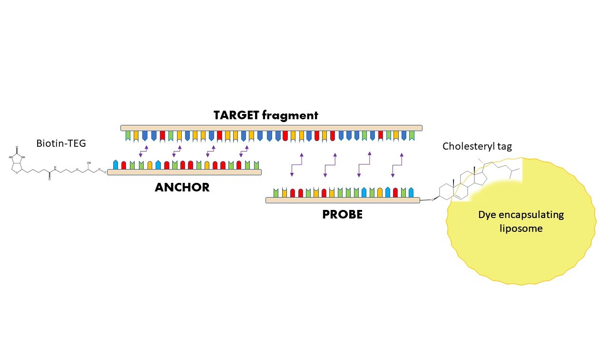

Interest in molecular markers present in biological fluids has seen a wide increase during the past decades.
Because of their low invasiveness, analysis of molecules present in blood and urine samples is nowadays used
for therapeutic and diagnostic purposes. Ranging from cancer to inflammatory diseases, new pathology-specific
markers are discovered and characterized every year.
In this regard, nucleic acid fragments present in biological fluids are used for the detection of DNA and RNA sequences,
suggesting the presence of specific diseases, leading to early diagnosis and personalized therapy choices.
DNA and RNA analysis is in many cases difficult to manipulate, cost and time consuming. Our research group is currently
trying to overcome these issues with the development of a fluorescent assay, able to recognize specific nucleic acid
sequences at the low concentration of 10-12 M. Exploiting artificial ssDNA probes, connected with liposomes encapsulating
fluorescent dyes, it is possible to observe a quantitative signal directly related to the presence of a specific ssDNA
sequence. Moreover, experiments showed a robust answer of the assay in presence of different interferences,
such as unspecific nucleotidic sequences and major serum components. Thus, the possibility to exploit a reliable
and fast assay for common laboratory procedures might open new possibilities for the “in vitro” detection of important
tumoral and non-tumoral markers.
